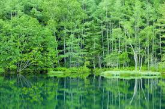
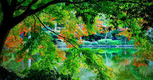
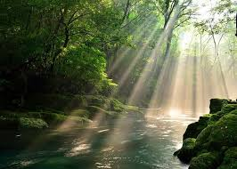
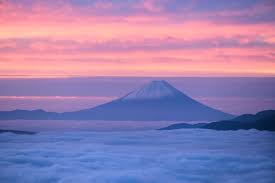
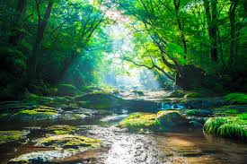

「Earth's Embrace」は、地球が織りなす雄大な景観と、そこに宿る生命の輝きを表現しています。 手つかずの森の静けさ、波が打ち寄せる海岸の躍動、山々の荘厳さなど、自然のあらゆる表情が、私たちに安らぎと活力を与えてくれます。

この場所は、都市の喧騒から離れ、五感を研ぎ澄ますための sanctuary（聖域）です。 鳥のさえずり、風のそよぎ、土の香り、そして満点の星空。ここでは、自然のリズムに身を任せ、心身ともにリフレッシュすることができます。.

自然は、時に厳しく、時に優しく、私たちに多くの教訓を与えてくれます。 季節の移ろい、生命の循環、そして共存の知恵。これらのメッセージは、私たちが本来持つ感覚を呼び覚まし、日々の生活に新たな視点をもたらしてくれるでしょう。

デジタルデトックスを求めるなら、自然の中に飛び込んでみてください。 スマートフォンを手放し、目の前に広がる絶景に没頭する。土を踏みしめ、澄んだ空気を吸い込む。そうすることで、心に静けさが訪れ、真の豊かさを感じられるはずです。.

Earth's Embrace」は、自然とのつながりを再確認し、持続可能な未来への意識を高めるきっかけとなることを願っています。 私たちの地球が育んできたかけがえのない美しさを守り、次世代へと繋いでいくために、今、私たちに何ができるかを共に考えていきましょう。